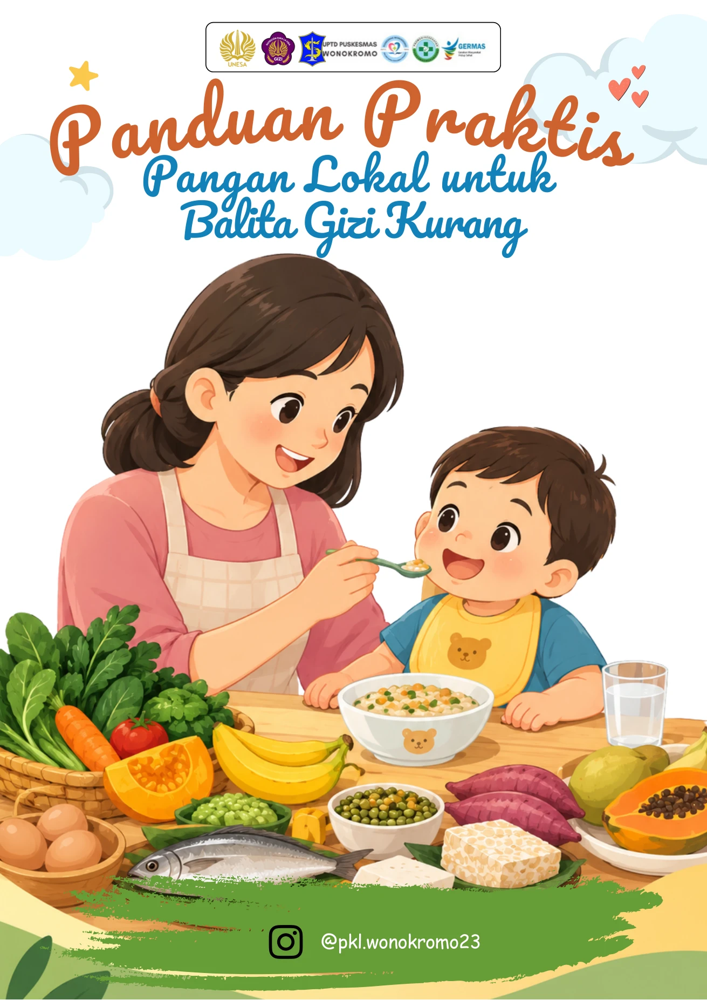
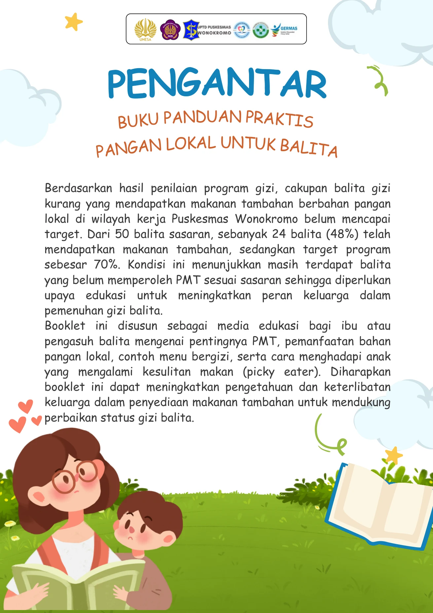
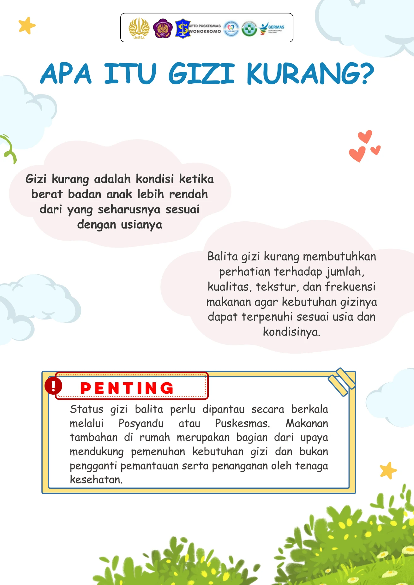
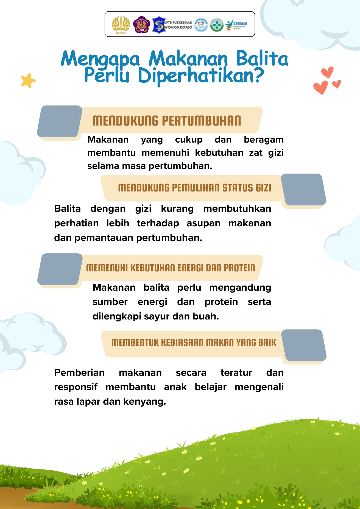
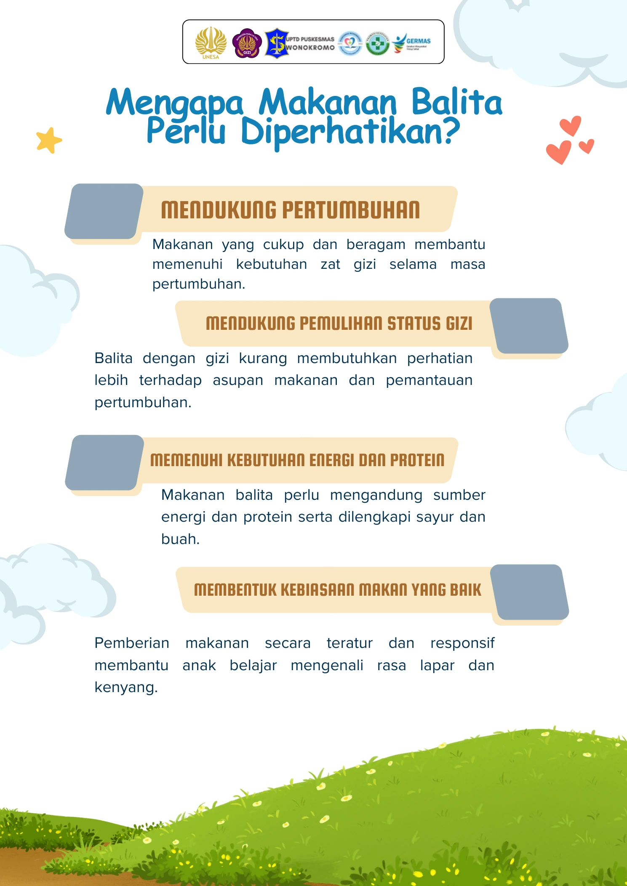
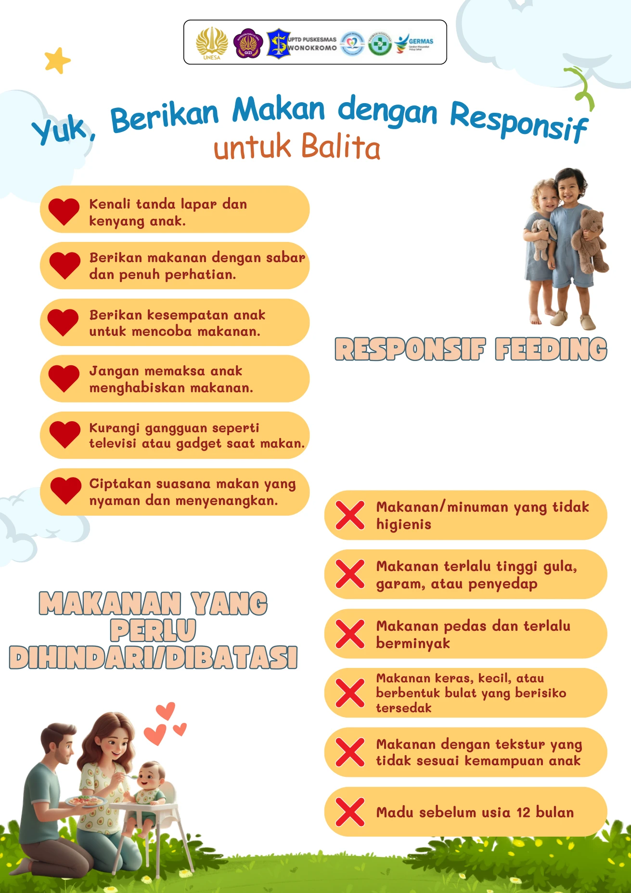

Selesai Membaca
Terima Kasih Telah Membaca!
Buku panduan ini disusun untuk mendukung kesehatan dan pemenuhan gizi optimal balita di wilayah kerja Puskesmas Wonokromo.
Formulir Evaluasi & Masukan
Mohon luangkan 1 menit untuk mengisi formulir umpan balik melalui Google Form berikut: